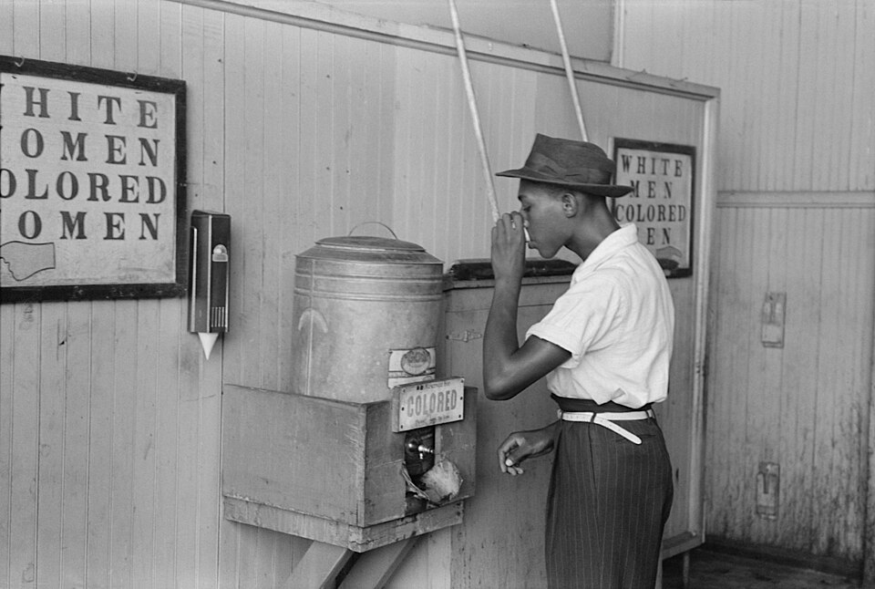
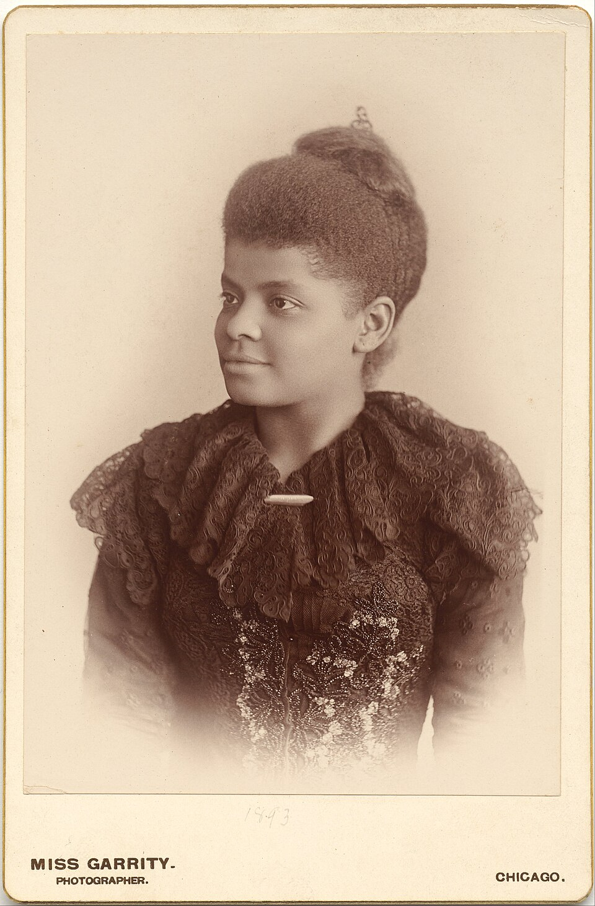
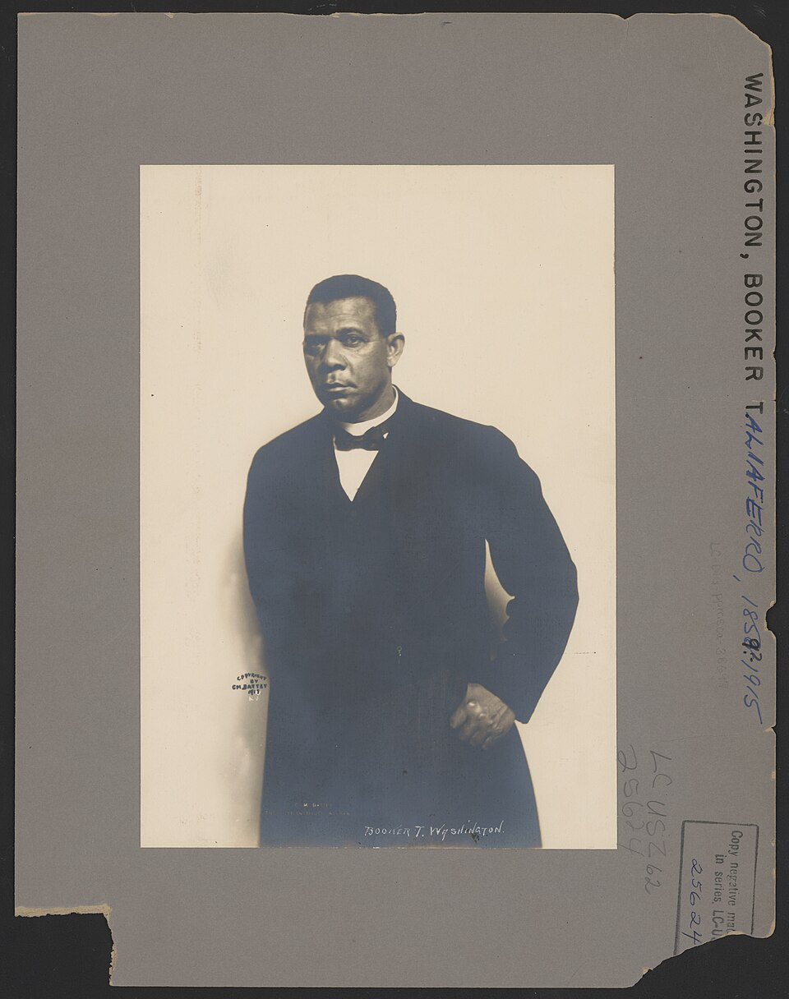
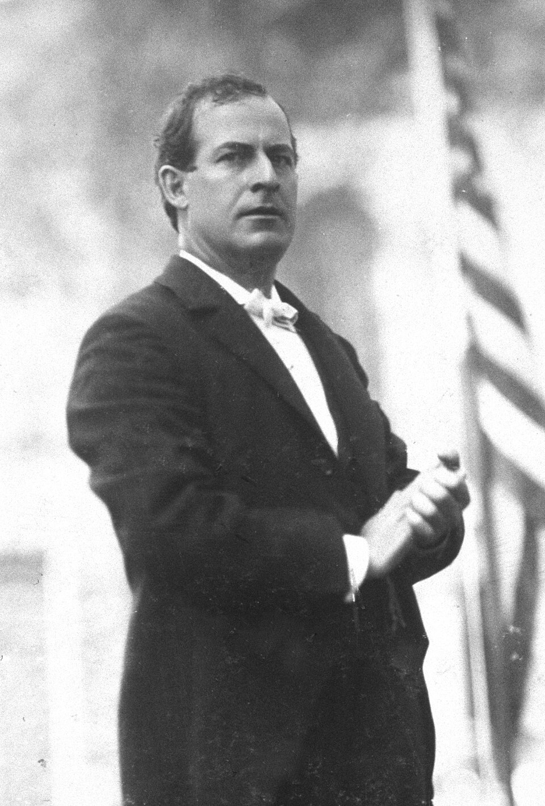

Directions: Your group is assigned one front. Work the three stations on your front and answer every question. Then meet with a group from the other front, teach them your case, learn theirs, and complete Part 3 together. Keep the two fronts distinct: they named different problems and sought different remedies.
Source: Photograph by Russell Lee for the Farm Security Administration, Oklahoma City, Oklahoma, 1939. The photograph documents a Jim Crow practice that began in the period of this lesson.

Segregation separated people by race in public facilities, schools, and transportation. Separate facilities were presented as equal. In practice, facilities for Black southerners were older, smaller, and worse funded.
1. What does this photograph show about how segregation worked in an ordinary public place?
2. Why does the claim of separate but equal fail in a case like this one? Give one reason from the station text.
Source: Portrait of Ida B. Wells, about 1893, and a labeled summary of Southern Horrors (1892).

Summary: After three friends were lynched in Memphis in 1892, Wells investigated lynching cases across the South. She recorded names, dates, accusations, and outcomes from newspaper reports. She found that many victims had been accused of no crime, that some were killed after business success or disputes with white competitors, and that officials rarely punished lynch mobs. She published these findings in Southern Horrors in 1892 and campaigned in the North and in Britain after a mob destroyed her Memphis newspaper office.
1. What method did Wells use to make her case, and why did that method matter?
2. Whom did Wells name as the problem: individual killers, officials who failed to act, or both? Support your answer from the summary.
Source: Portrait of Booker T. Washington and a labeled summary of his Atlanta Exposition speech, 1895.

Summary: Washington, born enslaved, built Tuskegee Institute in Alabama into a leading Black school for farming, trades, and teaching. In Atlanta in 1895 he proposed that Black southerners accept segregation for the present and build economic strength first, urging them, in his famous image, to cast down their bucket where they were: in farming, business, and skilled work. He asked white southerners to employ and respect Black labor. White audiences praised the speech. Black critics, including Wells, answered that without the vote and civil rights, Black people could not protect schools, property, or personal safety.
1. What remedy did Washington propose, and what did he ask Black southerners to accept for the present?
2. State the strongest criticism of Washington's plan from this station, in your own words.
Source: Labeled summary of farmers' grievances and the Granger laws, 1870s.
Summary: After the Civil War, wheat and cotton prices fell for decades. A farmer who borrowed $1,000 for seed and equipment still owed $1,000 when prices fell, but had to sell more crops to raise it, because each dollar was worth more than when he borrowed. Farmers also paid railroad rates and grain elevator charges they could not negotiate. Through the Grange, farmers pushed midwestern states to pass Granger laws in the 1870s that set maximum railroad and warehouse rates. Railroads challenged the laws in court, and later decisions limited state regulation, but the campaign taught farmers national political organization.
1. Explain in your own words why deflation made a farmer's debt heavier even though the amount owed did not change.
2. What remedy did the Granger laws attempt, and what limit did they meet?
Source: Labeled summary of the Omaha Platform of the Populist Party, adopted July 4, 1892.
Summary: The Populist Party, or People's Party, was founded in 1892 to represent farmers and laborers against banks, railroads, and corporations. Its Omaha Platform demanded free and unlimited coinage of silver, a graduated income tax, government ownership of railroads and telegraphs, the direct election of United States senators, a shorter working day, and an end to land speculation. The platform argued that concentrated wealth had captured government and that ordinary producers needed federal power used on their behalf.
1. Name two Omaha Platform demands and identify the problem each one answered.
2. Whom did the Populists name as the problem, according to this summary?
Source: Photograph of William Jennings Bryan speaking, 1896, and the documented closing lines of his Democratic convention speech.

Bryan closed his 1896 convention speech with these documented words: "You shall not press down upon the brow of labor this crown of thorns; you shall not crucify mankind upon a cross of gold." The speech won him the Democratic nomination at age 36. He campaigned across the country for free silver. The Populists endorsed him instead of running their own candidate. Republican William McKinley, promising sound money and prosperity and backed by far greater campaign funds, won the election. The Populist Party did not survive as a national force.
1. What policy does the cross of gold image attack, and what policy did Bryan want in its place?
2. Give two reasons, from this station, why Bryan lost in 1896 despite the size of the protest behind him.
With your partner group, fill in this comparison in discussion, then write the closing paragraph on your own. Front A named its problem and remedy. Front B named its problem and remedy. Do not merge them into one movement.
Closing task: Compare the two fronts. For each front, state whom it named as the problem and what remedy it sought. Then explain one way each front changed the politics that Progressives inherited after 1900.
1. What does this photograph show about how segregation worked in an ordinary public place? Separation reached basic needs such as drinking water in a public terminal. A separate, marked facility for Black travelers shows Jim Crow as a daily system, not only a set of major laws.
2. Why does the claim of separate but equal fail in a case like this one? Facilities for Black southerners were older, smaller, and worse funded, and the station text notes the separation itself assigned inferior status and resources. Accept either the resource point or the status point if supported from the text.
1. What method did Wells use to make her case, and why did that method matter? She investigated cases and documented names, dates, accusations, and outcomes from newspaper records. Evidence made her charges hard to dismiss as opinion and showed a pattern rather than isolated crimes.
2. Whom did Wells name as the problem? Both. Individual mobs did the killing, and officials who rarely punished them allowed lynching to work as racial control.
1. What remedy did Washington propose, and what did he ask Black southerners to accept for the present? Build economic strength first through farming, trades, business, and education at institutions such as Tuskegee, while accepting segregation for the present.
2. State the strongest criticism of Washington's plan. Without the vote and civil rights, Black southerners had no political means to protect their schools, property, or safety, so economic gains rested on white permission.
1. Explain why deflation made a farmer's debt heavier. Prices fell while the debt stayed fixed in dollars. Each dollar repaid was worth more, and the farmer had to sell more low priced crops to obtain it.
2. What remedy did the Granger laws attempt, and what limit did they meet? State laws setting maximum railroad and warehouse rates. Railroads challenged them and later court decisions limited state regulation.
1. Name two Omaha Platform demands and the problem each answered. Any two: free silver against a tight money supply and deflation; a graduated income tax against concentrated wealth; government ownership of railroads against unnegotiable rates and corporate power; direct election of senators against legislatures influenced by corporations.
2. Whom did the Populists name as the problem? Banks, railroads, and corporations, and a government the platform argued they had captured.
1. What policy does the cross of gold image attack, and what did Bryan want? It attacks the gold standard. Bryan wanted free silver: coinage of silver without limit at 16 to 1 with gold, expanding the money supply.
2. Give two reasons Bryan lost in 1896. McKinley had far greater campaign funds and business backing, ran on sound money and prosperity, and drew urban workers who feared inflation; the Populist endorsement also folded the protest into a Democratic campaign that could not hold both South and industrial North. Any two supported from the station.
Full credit should be awarded if the student: